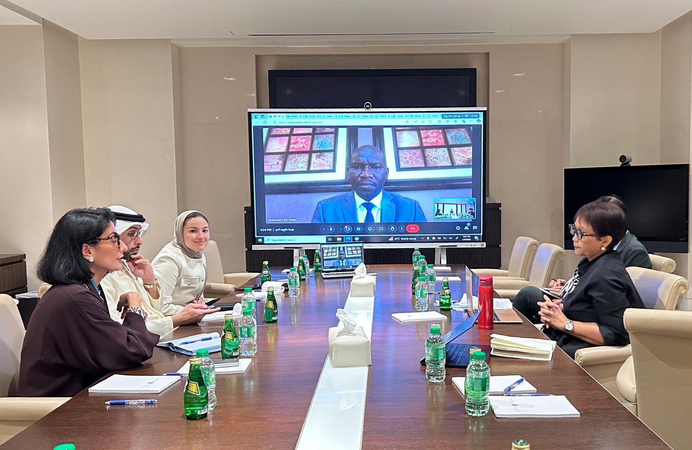

1️⃣ Conference Purpose & Core Goal
•The 2026 UN Water Conference must be action-oriented with a focus on concrete, measurable results.
•Goal: Expand access to water and sanitation in the developing world.
•UN Special Envoy on Water, Retno Marsudi, emphasized the need for the conference to be a turning point for global water action.
2️⃣ UAE’s Strategic Role
•The United Arab Emirates (UAE) will co-host the conference with Senegal.
UAE contributions:
•Extensive experience managing water in arid environments;
•Strong government and private sector commitment;
•Willingness to share technology, knowledge, and financing globally.
3️⃣ Global Investment Gaps
According to the World Bank:
•US$ 7 trillion in water infrastructure needed globally;
•US$ 22.6 trillion required by 2050;
•Current trends show only 36% of funding may be available.
4️⃣ Water & Sanitation Challenges
SDG 6 (Clean Water & Sanitation) is one of the most off-track goals.
•2 billion people lack safely managed drinking water;
•Over 4 billion people lack safely managed sanitation;
•Urgent action is needed due to water's fundamental link to health, well-being, and development.
5️⃣ Key Priorities for Action
•Develop a common roadmap to ensure coordination and synergy between projects from different institutions and development partners.
•Innovation and technology breakthroughs are essential to meet global water needs.
•Special Envoy Marsudi supports the Mohamed bin Zayed Water Initiative (launched in 2023) and is eager to link it with projects in Sub-Saharan Africa and beyond.
6️⃣ Notable Quotes – Special Envoy Marsudi
•“The UAE can count on the full support of the UN.”
•“We must evaluate challenges and guide all water actors.”
•“Technology and innovation are crucial to solving water issues.”
 To go places and do things that have never been done before – that’s what living is all about.
The 2026 UN Conference on Water must be concrete and action-oriented, so that it produces tangible results in increasing access to water and sanitation across the developing world. This was the main message of the UN Secretary General’s Special Envoy on Water, Retno Marsudi, at her meetings in the United Arab Emirates last week. The UAE will be a co-host of the 2026 UN Water Conference.
“People in the UAE, a country in the desert, know better than most how important water is to development, to life,” Special Envoy Marsudi said at the conclusion of her visit. “The government and private sector stakeholders in the UAE are equally committed to sharing their experience and technology and also to make financing available for water projects.”
According to the World Bank, US$ 7 trillion of investment in water infrastructure is needed globally, while US$ 22.6 trillion is needed by 2050 – but only 36% of the funding is predicted to be available, based on current trends. The government of the UAE, in partnership with co-host Senegal, will present its vision and priorities for the Conference in March. “I look forward to working closely with the UAE to make that vision a reality,” Special Envoy Marsudi told Abdula Balalaa, Assistant Minister for Energy and Sustainability Affairs.
The UAE’s leadership in hosting the 2026 conference will enable the country to leave a lasting legacy on tackling water issues, she told Mariam bin Mohammed Almheiri, Head of the International Affairs Office at the Presidential Court and a former Minister of Climate Change and the Environment. “The UAE can count on the full support of the UN,” Special Envoy Marsudi said. “The UAE has a lot of capacity, particularly in terms of technology, to share with the wider world.”
At her meeting with Reem Ebrahim Al Hashimy, Minister of State for International Cooperation, Ms. Masuhdi discussed the importance of a common roadmap for action on water, so that projects funded and run by different institutions and development partners complement and build on each other. “We need to evaluate challenges and provide guidance for all water actors,” she said.
Technological breakthrough and accelerated innovation are crucial in meeting the world’s water needs, Special Envoy Marsudi told Ayesha Al Ateeqi, Executive Director of the Mohamed bin Zayed Water Initiative, set up by the UAE in 2023 as an investment vehicle for water projects. “I am keen to support the Initiative, including through matchmaking with potential projects in developing countries, particularly in Sub-Saharan Africa.”
Progress on Sustainable Development Goal 6 (Clean water and sanitation) is lagging compared to other SDGs. Despite some improvements in access to clean water and sanitation, around 2 billion people globally still lack safely managed drinking water services, and over 4 billion people do not have safely managed sanitation services. SDG 6 is among the goals requiring the most urgent action due to its fundamental role in health, well-being, and sustainable development.